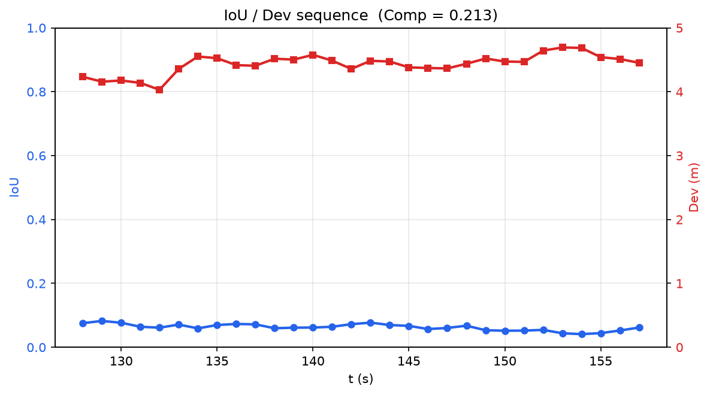
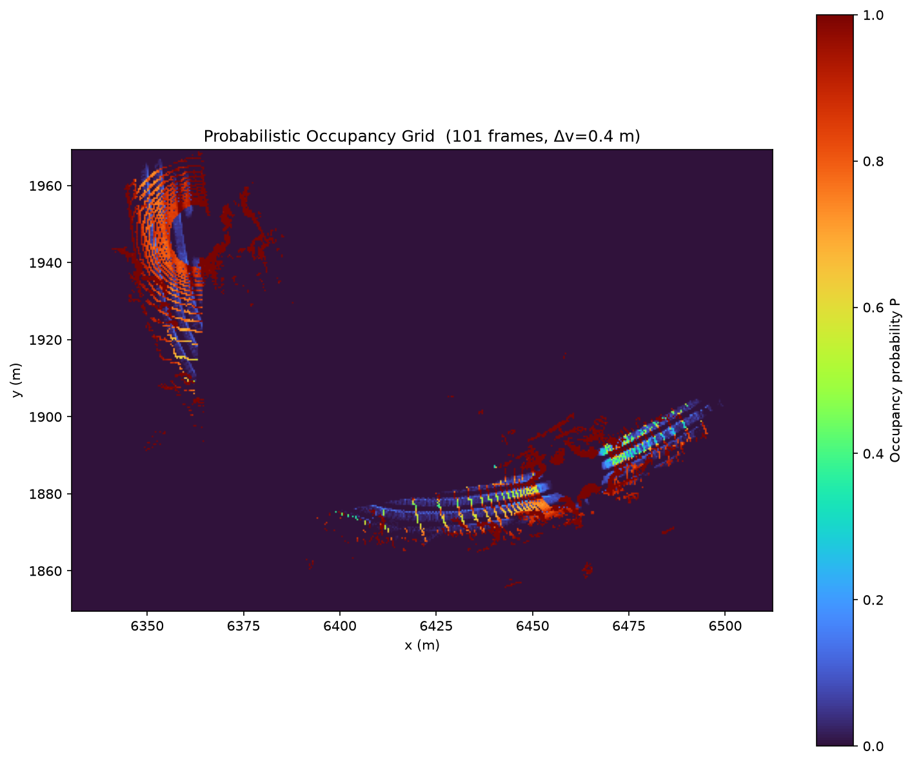

LidarSIM 多 LiDAR 感知仿真与评价平台
LidarSIM — Multi-LiDAR Simulation & Evaluation
LidarSIM 面向动态交通场景，基于 GPU 并行 ray-casting 仿真多路 路侧 / 车载 LiDAR 点云，提供物理真实感的扫描时序运动伪影 （rolling shutter）、强度衰减（反射率 × 入射角 × 大气消光）、 雨/雪天气杂波、漏检模型等功能，内置完整的协同感知评估链路。
LidarSIM targets dynamic traffic scenarios. It simulates multi-roadside / on-board LiDAR point clouds via GPU-parallel ray-casting with physically accurate scanning-order motion artefacts (rolling shutter), intensity attenuation (reflectance × incidence × atmospheric loss), rain/snow clutter and dropout — plus a built-in cooperative-perception evaluation pipeline.
输入
Input
- • 轨迹文件（Vissim / SUMO 格式）
- • 道路环境点云（PLY / H5 含语义）
- • 车辆三维模型（STL / PLY / OBJ）
- • Vehicle trajectories (Vissim / SUMO formats)
- • Environment point cloud (PLY / H5 with semantics)
- • Vehicle 3D mesh library (STL / PLY / OBJ)
核心能力
Capabilities
功能模块
Functional Modules
① LiDAR 仿真
① LiDAR Simulation
多类型 LiDAR 预设 · 雨雪天气 · 车路协同 · Ego 视角
Multi-type presets · weather · V2X · ego view
多类型路侧 LiDAR 仿真
Multi-type roadside LiDAR
雨雪天气仿真
Rain / snow weather simulation
车路协同感知 (V2X)
Vehicle–road cooperative perception (V2X)

单车 Ego 视角仿真
Ego-vehicle simulation
多 LiDAR 差异化布设展示
Multi-LiDAR placement comparison
② 感知性能评价
② Perception Evaluation
L-shape 检测 · IoU / Dev / Comp · 分类型评估 · CSV 导出
L-shape · IoU / Dev / Comp · per-vType breakdown · CSV
评价结果输出演示
Evaluation workflow

IoU / Dev / Comp 数据展示（CSV）
IoU / Dev / Comp time series (CSV)
③ 概率占用网格 (POG)
③ Probabilistic Occupancy Grid
逐帧占用平均 · 观测掩码 · BEV / 3D 可视化 · NPZ / MAT 导出
Per-frame occupancy · observation mask · BEV/3D · NPZ/MAT export
POG 动态构建过程
POG construction over time

POG 结果可视化
POG visualization (BEV)
标注数据导出 (OpenCOOD)
Annotation Export for OpenCOOD
为支持协同感知模型训练，指定起止帧后，LidarSIM 支持导出 OpenCOOD 框架（OPV2V 格式）下的标注数据： 每帧生成协同感知点云与 GT BBox，自动按场景编号归档， 可直接用于多车辆协同感知模型训练。
To support cooperative-perception training, LidarSIM exports OpenCOOD-format (OPV2V) annotations given a frame range. Each frame produces cooperative point clouds and GT BBoxes, organised per scene and ready to plug into multi-vehicle cooperative-perception pipelines.